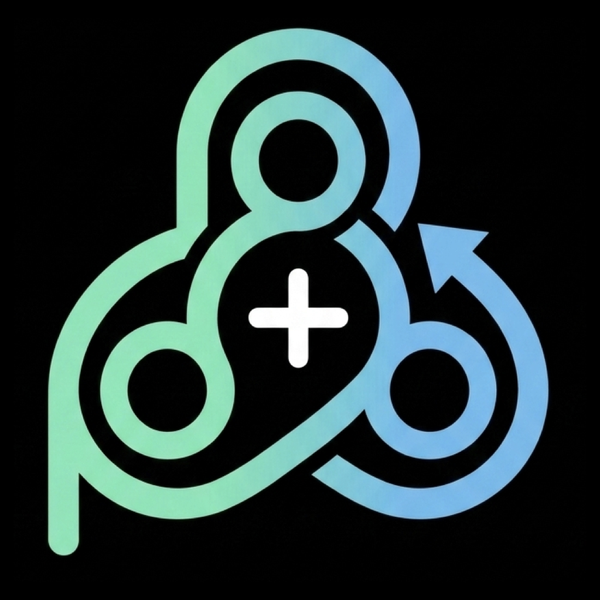

Video tutorials
Short walkthroughs of paylash's main features. The app and subtitles in the videos are in English.
You've subscribed and become a premium user. Now create your account and set up your profile — this video walks you through it step by step.
Prefer the browser? You can create your paylash account on the web app too. This video walks you through signing up and setting up your profile from any browser.
With your profile ready, it's time to create your first group. This video shows you how to create and set up a group, then add members and invite friends and family to join.
Got an invite? This video shows you how to join an existing group with an invite code, and gives you a tour of the Groups view — where your groups, members, and shared events all live.
Groups organize spending into events — a trip, a dinner, a night out. This video shows you how to create an event, add the people involved, and customize it to fit the occasion.
This is where paylash does the heavy lifting. Learn how to add and customize expenses within an event, view live balances, and track settlements so everyone knows who owes whom.
Video eğitimleri
paylash'ın ana özelliklerinin kısa anlatımları. Videolardaki uygulama ve altyazılar İngilizcedir.
Abone oldun ve premium kullanıcı oldun. Şimdi hesabını oluştur ve profilini ayarla — bu video adım adım gösteriyor.
Tarayıcıyı mı tercih edersin? paylash hesabını web uygulamasından da oluşturabilirsin. Bu video, herhangi bir tarayıcıdan nasıl kayıt olacağını ve profilini nasıl ayarlayacağını gösteriyor.
Profilin hazır olduğuna göre ilk grubunu oluşturma zamanı. Bu video bir grubu nasıl oluşturup ayarlayacağını, ardından üye ekleyip arkadaşlarını ve aileni nasıl davet edeceğini gösteriyor.
Davet aldın mı? Bu video, bir davet koduyla mevcut bir gruba nasıl katılacağını gösteriyor ve gruplarının, üyelerinin ve paylaşılan etkinliklerinin bulunduğu Gruplar görünümünde kısa bir tur sunuyor.
Gruplar harcamaları etkinliklere göre düzenler — bir gezi, bir akşam yemeği, bir gece. Bu video bir etkinliği nasıl oluşturacağını, katılan kişileri nasıl ekleyeceğini ve etkinliği duruma göre nasıl özelleştireceğini gösteriyor.
İşte paylash'ın asıl işini yaptığı yer. Bir etkinlik içinde harcamaları nasıl ekleyip özelleştireceğini, anlık bakiyeleri nasıl görüntüleyeceğini ve kimin kime borçlu olduğunu herkesin bilmesi için hesaplaşmaları nasıl takip edeceğini öğren.
Video-Tutorials
Kurze Durchläufe der wichtigsten paylash-Funktionen. App und Untertitel in den Videos sind auf Englisch.
Du hast ein Abo abgeschlossen und bist jetzt Premium-Nutzer. Erstelle nun dein Konto und richte dein Profil ein — dieses Video zeigt dir Schritt für Schritt, wie.
Lieber im Browser? Du kannst dein paylash-Konto auch in der Web-App erstellen. Dieses Video zeigt dir, wie du dich von jedem Browser aus anmeldest und dein Profil einrichtest.
Dein Profil ist fertig — Zeit für deine erste Gruppe. Dieses Video zeigt dir, wie du eine Gruppe erstellst und einrichtest und dann Mitglieder hinzufügst und Freunde und Familie einlädst.
Eine Einladung erhalten? Dieses Video zeigt dir, wie du mit einem Einladungscode einer bestehenden Gruppe beitrittst, und führt dich durch die Gruppen-Ansicht — wo all deine Gruppen, Mitglieder und gemeinsamen Ereignisse zu finden sind.
Gruppen organisieren Ausgaben in Ereignissen — eine Reise, ein Abendessen, ein Abend. Dieses Video zeigt dir, wie du ein Ereignis erstellst, die Beteiligten hinzufügst und es passend zum Anlass anpasst.
Hier leistet paylash die eigentliche Arbeit. Lerne, wie du Ausgaben in einem Ereignis hinzufügst und anpasst, aktuelle Salden ansiehst und Abrechnungen verfolgst, damit jeder weiß, wer wem was schuldet.
Tutoriales en vídeo
Recorridos breves por las funciones principales de paylash. La app y los subtítulos de los vídeos están en inglés.
Te has suscrito y ya eres usuario premium. Ahora crea tu cuenta y configura tu perfil: este vídeo te lo muestra paso a paso.
¿Prefieres el navegador? También puedes crear tu cuenta de paylash en la versión web. Este vídeo te muestra cómo registrarte y configurar tu perfil desde cualquier navegador.
Con tu perfil listo, es hora de crear tu primer grupo. Este vídeo te muestra cómo crear y configurar un grupo, y luego añadir miembros e invitar a amigos y familia.
¿Te han invitado? Este vídeo te muestra cómo unirte a un grupo existente con un código de invitación y te da un recorrido por la vista de Grupos, donde están todos tus grupos, miembros y eventos compartidos.
Los grupos organizan los gastos en eventos: un viaje, una cena, una noche. Este vídeo te muestra cómo crear un evento, añadir a los participantes y personalizarlo según la ocasión.
Aquí es donde paylash hace el trabajo pesado. Aprende a añadir y personalizar gastos dentro de un evento, ver saldos en tiempo real y hacer seguimiento de las liquidaciones para que todos sepan quién debe a quién.
Video tutorial
Brevi guide alle funzioni principali di paylash. L'app e i sottotitoli nei video sono in inglese.
Hai sottoscritto l'abbonamento e ora sei un utente premium. Adesso crea il tuo account e imposta il profilo: questo video te lo mostra passo dopo passo.
Preferisci il browser? Puoi creare il tuo account paylash anche sulla versione web. Questo video ti mostra come registrarti e impostare il profilo da qualsiasi browser.
Ora che il profilo è pronto, è il momento di creare il tuo primo gruppo. Questo video ti mostra come creare e configurare un gruppo e poi aggiungere membri e invitare amici e familiari.
Hai ricevuto un invito? Questo video ti mostra come unirti a un gruppo esistente con un codice di invito e ti accompagna nella vista Gruppi, dove trovi tutti i tuoi gruppi, membri ed eventi condivisi.
I gruppi organizzano le spese in eventi: un viaggio, una cena, una serata. Questo video ti mostra come creare un evento, aggiungere i partecipanti e personalizzarlo in base all'occasione.
Qui è dove paylash fa il lavoro pesante. Scopri come aggiungere e personalizzare le spese all'interno di un evento, vedere i saldi in tempo reale e tenere traccia dei pagamenti così che tutti sappiano chi deve cosa a chi.
Tutoriels vidéo
Aperçus rapides des principales fonctionnalités de paylash. L'app et les sous-titres des vidéos sont en anglais.
Tu t'es abonné et tu es maintenant utilisateur premium. Crée ton compte et configure ton profil — cette vidéo te montre comment, étape par étape.
Tu préfères le navigateur ? Tu peux aussi créer ton compte paylash sur la version web. Cette vidéo te montre comment t'inscrire et configurer ton profil depuis n'importe quel navigateur.
Ton profil est prêt : il est temps de créer ton premier groupe. Cette vidéo te montre comment créer et configurer un groupe, puis ajouter des membres et inviter tes amis et ta famille.
Tu as reçu une invitation ? Cette vidéo te montre comment rejoindre un groupe existant avec un code d'invitation et te fait visiter la vue Groupes — où se trouvent tous tes groupes, membres et événements partagés.
Les groupes organisent les dépenses en événements — un voyage, un dîner, une soirée. Cette vidéo te montre comment créer un événement, ajouter les participants et le personnaliser selon l'occasion.
C'est là que paylash fait le gros du travail. Apprends à ajouter et personnaliser des dépenses dans un événement, à consulter les soldes en temps réel et à suivre les remboursements pour que chacun sache qui doit quoi à qui.